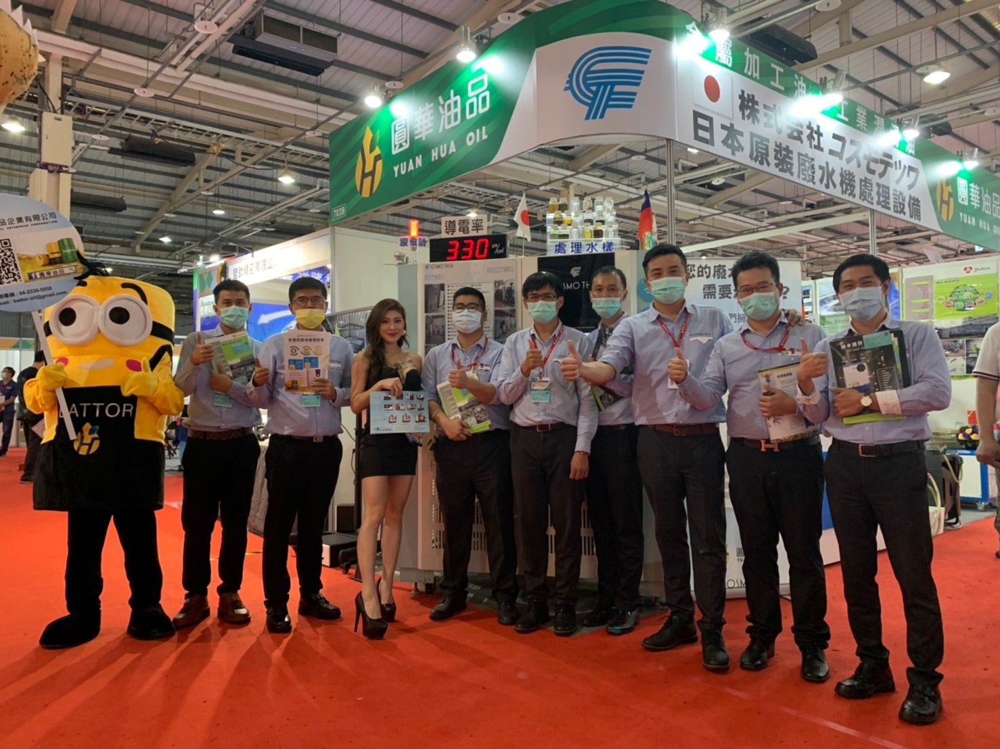
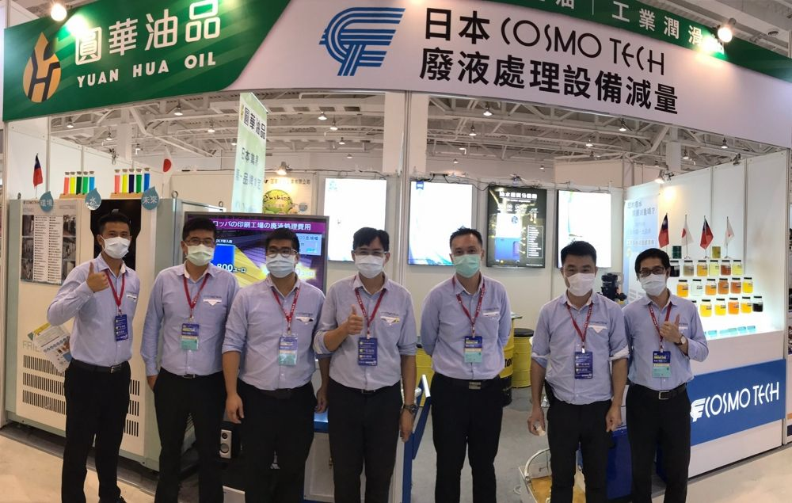
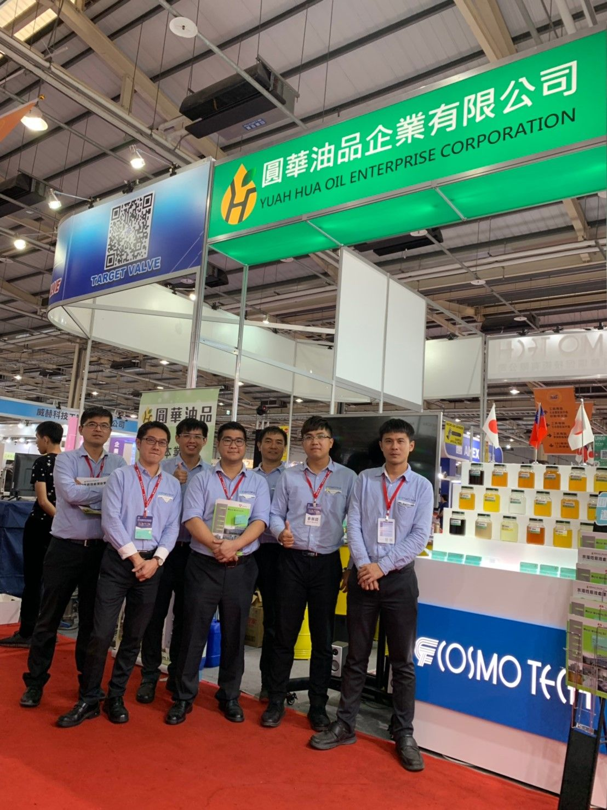
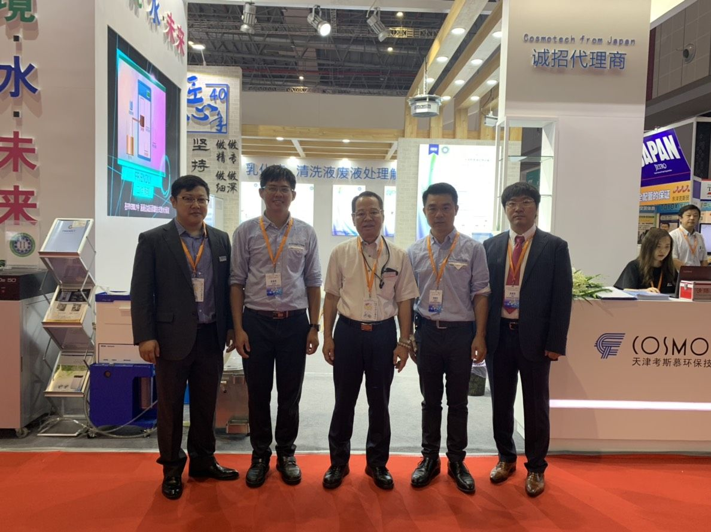
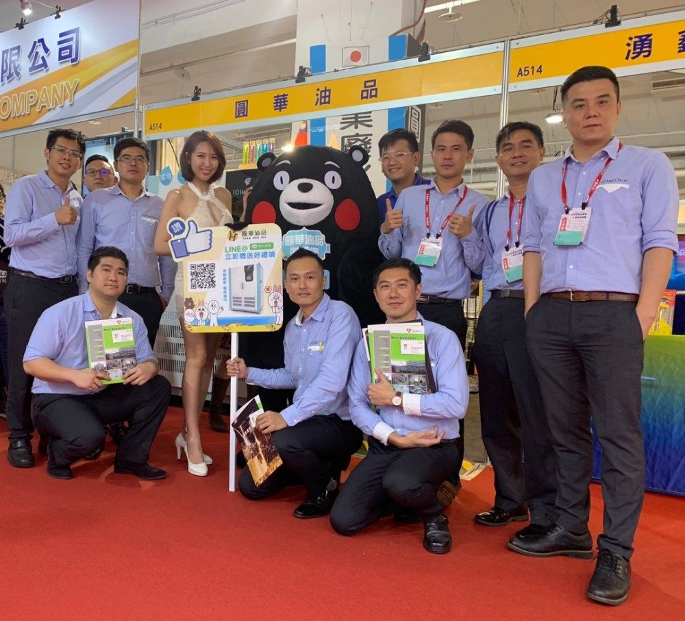
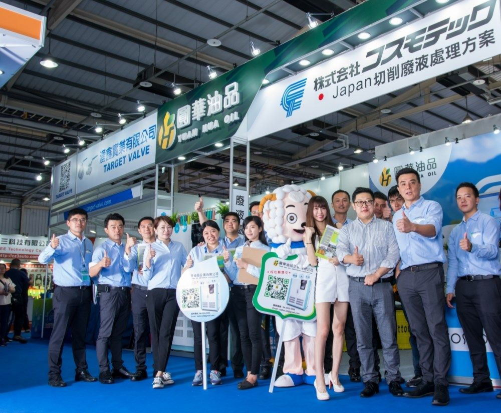
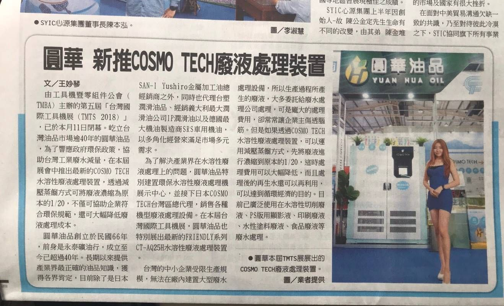

Gallery ／ 歷年展會/活動花絮
歷年展會與活動花絮
圓華歷年參與工具機展、自動化展與產業博覽會的現場紀錄，以及設備與公司介紹影片。
Gallery ／ 花絮
現場紀錄
- 9 張照片EXHIBITION
2020 TIAE 台中工具機展
11月12日(四)至16日(一) 在「大台中國際會展中心」圓華油品參與工業切削油及水溶性切削液的各項展出，深貨客戶信賴…
觀看相簿 
6 張照片EXHIBITION2020 高雄自動化工業展
展覽現場花絮照片。
觀看相簿
10 張照片EXHIBITION2019 台中工具機展
11月7日(四)至11日(一) 在「大台中國際會展中心」盛大展出 經濟日報為促進機械產業發展，2079台中工具機展將完整…
觀看相簿
13 張照片EXHIBITION2019 中國國際工業博覽會
展覽現場花絮照片。
觀看相簿
18 張照片EXHIBITION2019 台南工具機大展
展覽現場花絮照片。
觀看相簿
25 張照片EXHIBITION2018 台灣國際工具機展
展覽現場花絮照片。
觀看相簿

媒體報導感謝工商時報報導-綠色時代來臨～經濟趨勢、環保意識｜圓華油品廢水處理設備
由工具機暨零組件公會（TMBA）主辦的第五屆「台灣國際工具機展（TMTS 2018）」，已於本月11日閉幕。屹立台灣油品市場逾40年的圓華油品，為了響應政府環保政策，協助台灣工業廢水減量，在本屆展會中推出最新的COSMO TECH水溶性廢液…
完整報導內容待確認
更多報導整理中
相關報導與專訪內容將由圓華提供後發布。
活動照片整理中
公司活動、聚餐等照片將由圓華提供後發布。
圓華油品介紹影片
關於圓華油品的介紹影片。
COSMOTECH LE 設備介紹
DESTIMAT® LE 減壓蒸發設備運轉介紹。
COSMOTECH FRIENDLY 廢水處理設備
水溶性廢液處理裝置 FRIENDLY 運轉影片。
Contact ／ 聯絡我們
有現場問題，不確定該從哪裡開始？
- 不確定該使用哪一款油品？
- 正在處理切削液壽命、異味、生鏽或廢水問題？
告訴我們目前的加工條件與使用情況，由圓華團隊協助了解需求並評估適合的產品與服務方式。
圓華油品股份有限公司
- Tel
- 04-2335-5559
- Fax
- 04-2335-8886
- Hours
- 週一至週五 08:00 – 17:00